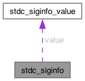

- Generated by
 1.17.0
1.17.0
|
WG14 threadsafe signals
|
A platform independent subset of siginfo_t. More...
#include <thrd_signal_handle.h>

Public Attributes | |
| int | signo |
| The signal raised. | |
| stdc_siginfo_error_code_t | error_code |
| The system specific error code for this signal, the si_errno code (POSIX) or NTSTATUS code (Windows). Zero when the raise carried no OS info (e.g. stdc_raise(signo, NULL, NULL)). | |
| void * | addr |
| union stdc_siginfo_value | value |
| A user-defined value. | |
| stdc_siginfo_siginfo_t * | raw_info |
| The OS specific signal info. | |
| stdc_siginfo_context_t * | raw_context |
| The OS specific ucontext_t (POSIX) or PCONTEXT (Windows). | |
| struct sig_global_state_tss_state_per_frame_t * | internal_local_decider |
| struct sighandler_info * | internal_sighandler |
| struct global_signal_decider_t * | internal_global_decider |
| bool | internal_decider_is_abandoned |
A platform independent subset of siginfo_t.
Definition at line 404 of file thrd_signal_handle.h.
| void* stdc_siginfo::addr |
Memory location which caused fault, if appropriate. NULL when the raise carried no OS info.
Definition at line 412 of file thrd_signal_handle.h.
| stdc_siginfo_error_code_t stdc_siginfo::error_code |
The system specific error code for this signal, the si_errno code (POSIX) or NTSTATUS code (Windows). Zero when the raise carried no OS info (e.g. stdc_raise(signo, NULL, NULL)).
Definition at line 411 of file thrd_signal_handle.h.
| bool stdc_siginfo::internal_decider_is_abandoned |
Definition at line 435 of file thrd_signal_handle.h.
| struct global_signal_decider_t* stdc_siginfo::internal_global_decider |
Definition at line 431 of file thrd_signal_handle.h.
| struct sig_global_state_tss_state_per_frame_t* stdc_siginfo::internal_local_decider |
Definition at line 428 of file thrd_signal_handle.h.
| struct sighandler_info* stdc_siginfo::internal_sighandler |
Definition at line 429 of file thrd_signal_handle.h.
| stdc_siginfo_context_t* stdc_siginfo::raw_context |
The OS specific ucontext_t (POSIX) or PCONTEXT (Windows).
Definition at line 420 of file thrd_signal_handle.h.
| stdc_siginfo_siginfo_t* stdc_siginfo::raw_info |
The OS specific signal info.
Definition at line 418 of file thrd_signal_handle.h.
| int stdc_siginfo::signo |
The signal raised.
Definition at line 406 of file thrd_signal_handle.h.
| union stdc_siginfo_value stdc_siginfo::value |
A user-defined value.
Definition at line 415 of file thrd_signal_handle.h.